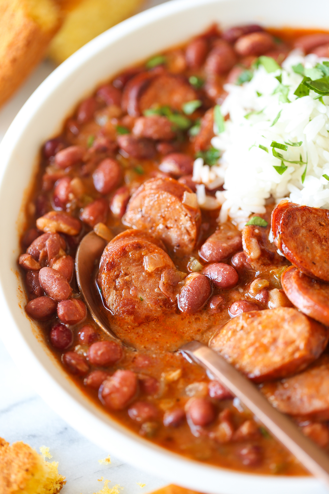

Red Beans and Rice

Description
Serve with a scoop of rice, garnished with parsley, and maybe some extra sausage on
top. That can’t hurt too much, right?
Ingredients
- 1 cup of basmati rice
- 1 tbsp vegetable oil
- 12.8 oz package of andouille sausage
- medium sweet onion
- green bell pepper
- 2 celery ribs
- 2 tbsp tomato paste
- 3 cloves of garlic
- 1.5 tsp Cajun seasoning
- 3 15 oz cans of red beans
- 3 cups chicken stock
- 1 tsp hot sauce
- 1 bay leaf
- Salt and pepper to taste
- 2 tbsp chopped fresh parsley leaves
Steps
- In a large saucepan of 2 cups water, cook rice according to package instructions; set
aside.
- Heat vegetable oil in a large stockpot or Dutch oven over medium heat. Working in
batches, add sausage, and cook, stirring frequently, until sausage is lightly browned,
about 3-4 minutes; set aside.
- Add onion, bell pepper and celery. Cook, stirring occasionally, until tender, about
3-4 minutes
- Stir in tomato paste, garlic and Cajun seasoning until fragrant, about 1 minute.
- Stir in red beans, chicken stock, hot sauce, bay leaf and sausage; season with salt
and pepper, to taste. Bring to a boil; cover, reduce heat and simmer for 15
minutes. Uncover; continue to simmer until reduced, an additional 15 minutes.
- Using a wooden spoon, mash beans until slightly thickened, if desired; season with
salt and pepper, to taste.
- Serve immediately, topped with rice and garnished with parsley, if desired.
Source: Damn Delicious